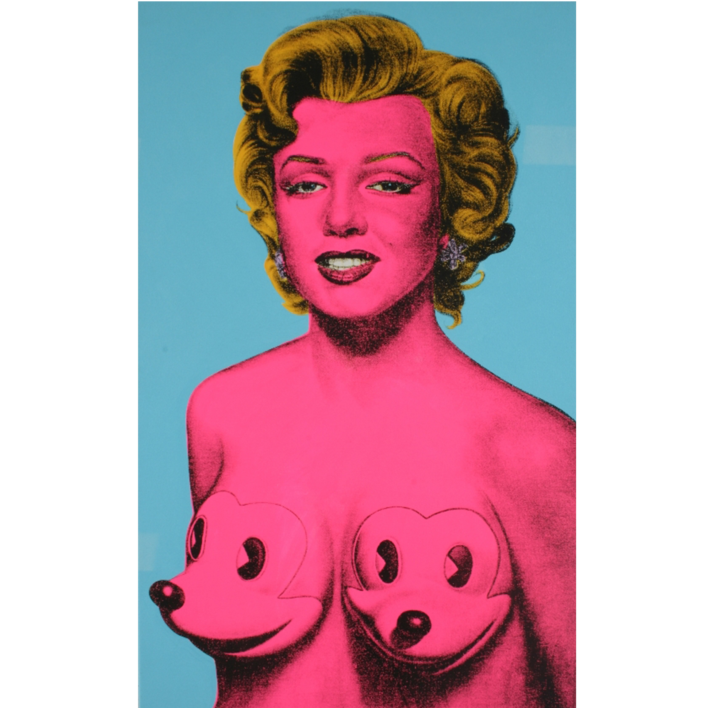
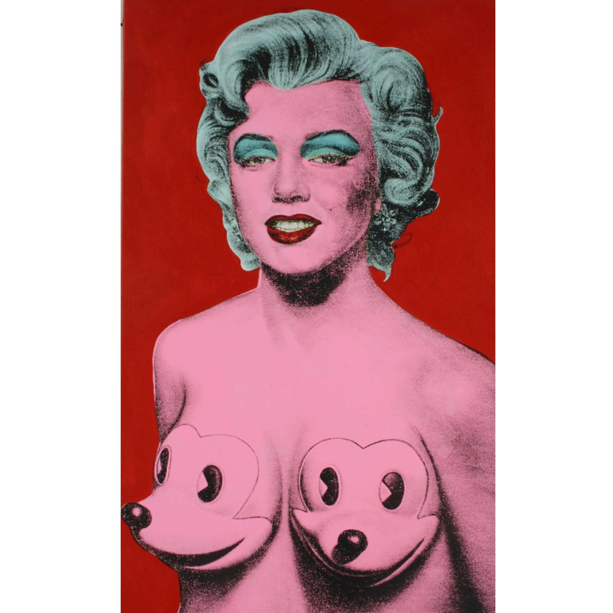

Series
Silkscreen ink, stencil, and synthetic polymer paint on canvas. Each variant is unique.
Variants

Variant 01
File: Warholesque-Marilyn-Three-Quarters-var-01.jpg

Variant 02
File: Warholesque-Marilyn-Three-Quarters-var-02.jpg